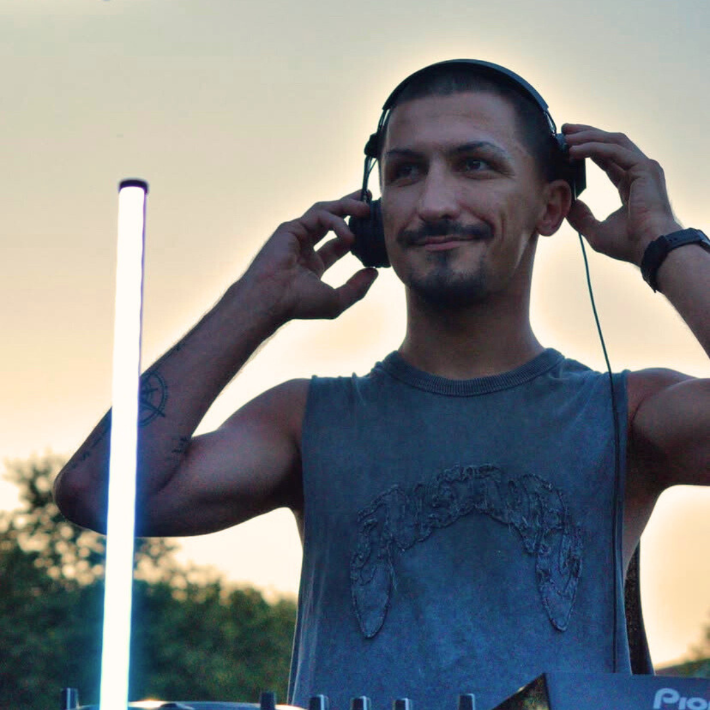

TWO SEVEN
Seeks to express his authentic self in a fast-paced world, finding solace and freedom behind the decks. Music has always been his voice, allowing him to communicate truths that words can't. Inspired by artists like Nico Moreno, Enrico Sangiuliano, Deborah de Luca, Sara Landry, Faithless, Jeff Mills, Sven Vath,... He aims to create a unique sound that connects with others, sharing the joy and liberation he experiences through music and dance. His ultimate goal is to inspire and move people just as he has been inspired.

TRACKS
TWO SEVEN // vol.1